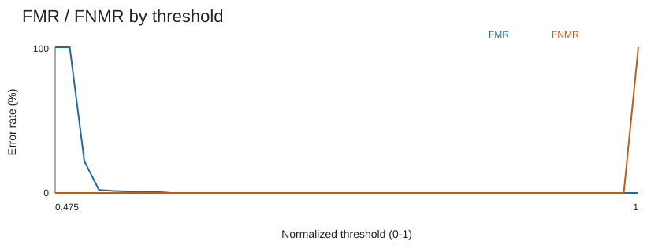
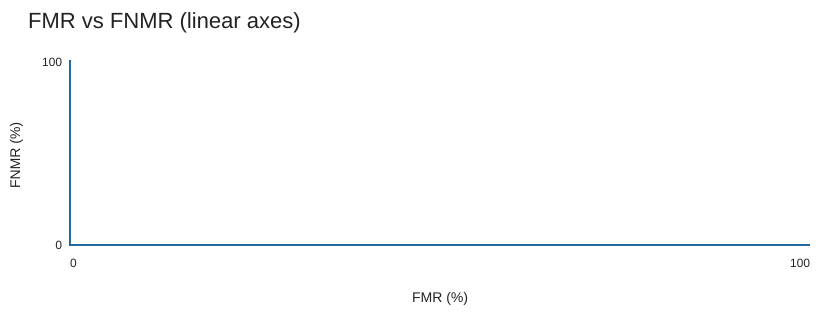

Status: Results available.
database=data/original/FVC2000_DB3_B weights_folder=models/retrain_20261117_235258 timeout_ms=0 concurrency=1 comparison_type=Both report_metrics=FTE (%); FMR (%); FNMR (%); EER (%); Matching time (ms) genuine_rule=All eligible images impostor_rule=All eligible images
Each selected image creates an independent enrollment template. Each pair uses the highest successful model normalized similarity: (cosine + 1) / 2, from 0 to 1. This is not a calibrated probability.
Genuine (same finger): score >= threshold = PASS, below = MISS (false rejection). Impostor (different fingers): score < threshold = REJ (correct rejection), otherwise = FA (false acceptance). Genuine threshold: 0.9; Impostor threshold: 0.8. ERR means inference failed without a score.
| Model ID | Weight file | Load status |
|---|---|---|
| fvc2000_db3 | models/retrain_20261117_235258/fvc2000_db3.bin | Ready |
| Metric | Value |
|---|---|
| FTE (%) | 0 |
| FMR (%) | 8.33333 |
| FNMR (%) | 0 |
| EER (%) | 0 |
| Matching time (ms) | 84.0309 |
FMR uses the Impostor threshold; FNMR uses the Genuine threshold. FMR/FNMR use planned-pair denominators; failed genuine attempts count as nonmatches. EER shows observed-threshold bounds; EER* uses successful pairs only. EER and curves sweep a common threshold independently of the entered thresholds.



Enrollment images | Comparison pairs in saved order | All metrics | Run settings | Selected models | Per-model scores and failures
Only selected metrics appear in this report. CSV files keep all metrics and raw results. Self-image comparisons are excluded.